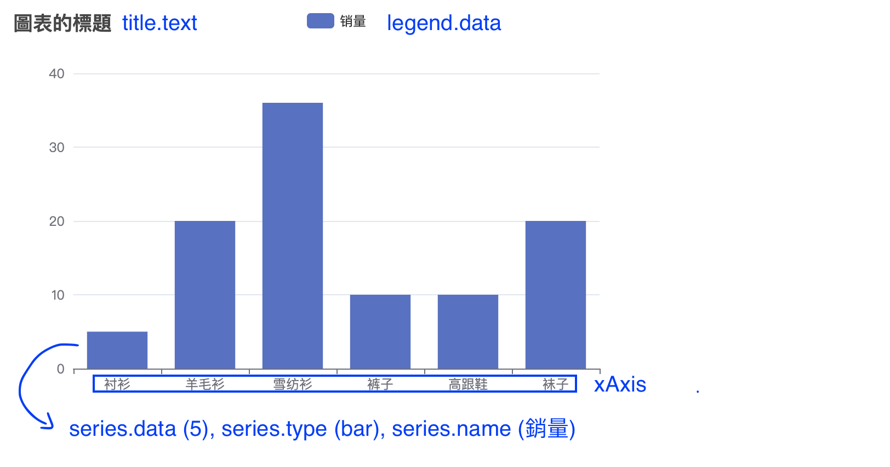
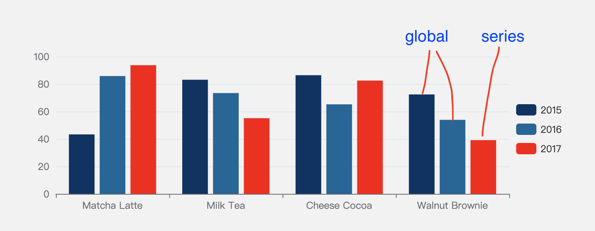
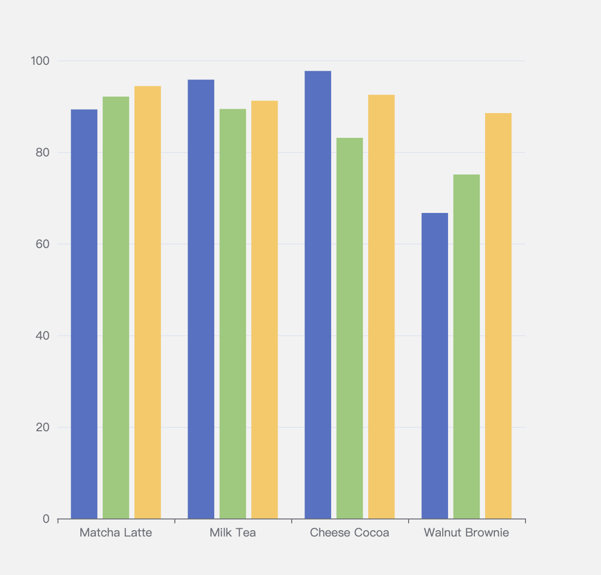
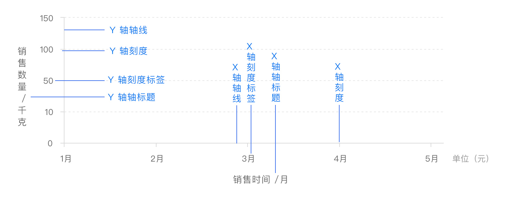
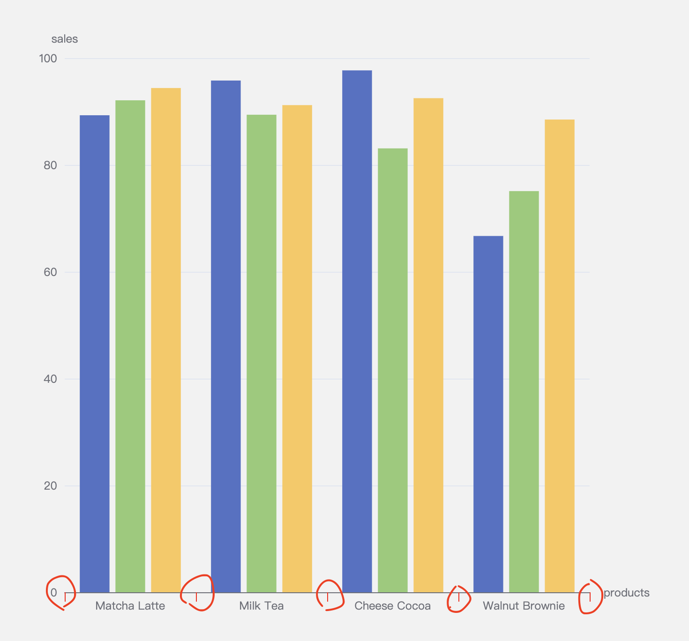
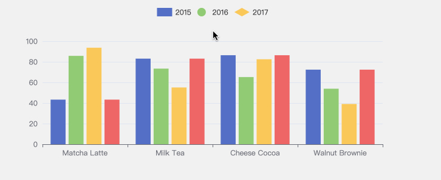
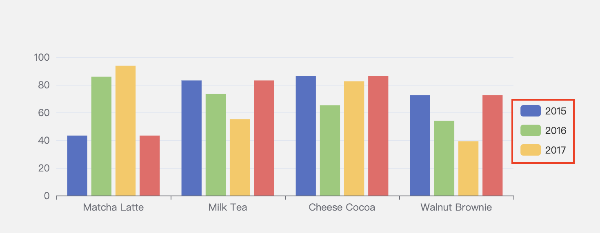
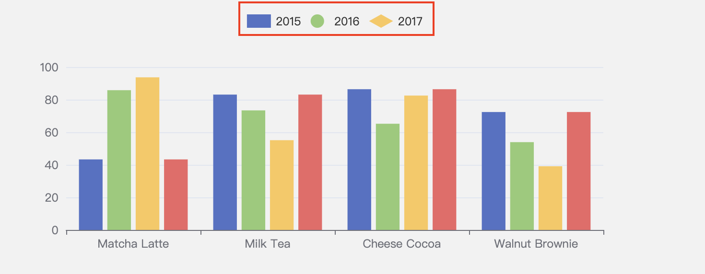
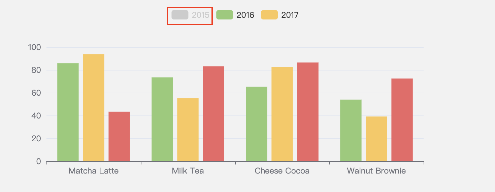

第一次嘗試圖表應用。
基本資料結構與觀念
觀念
echarts 其實就是一個幫你處理「圖表實現（implement）」 的套件，你只要依照文件上的 配置 來做設定就會自動幫你產生對應的圖表，所以你不需要花心思在「如何建立圖表」這件事情上（一個實際案例是 D3.js）。
基本配置範例
1 | const option = { |
這邊的配置你搭配下圖一起看以後大概就能理解兩者之間的對應關係：

補充：
tooltiphover 時會有 popup 顯示訊息legend是用來過切換單一圖表的顯示 or 隱藏（需在series.name設置對應名稱 ）series主要是用來代表「資料」。也包含其他的設定，像是type: bar代表以柱狀圖呈現，而name則代表該資料的名稱，以此類推此。
最基本的配置其實就大概包含以上這些，其他的都只是往後延伸而已。當你碰到任何疑惑時，請務必參考 API Spec 來學習與練習。不需要死記硬背，當你用的多時就會慢慢記住了。
圖表尺寸
圖表預設會填滿容器的寬與高，例如：
1 | .wrapper { |
1 | import * as echarts from 'echarts' |
這樣子圖表就會是 400x400 的大小。
自動調整大小
如果要手動調整圖表大小的話，可以用在 init 時加上 config：
1 | const myChart = echarts.init(chartWrapper.current, null, { |
如果要隨視窗改變時調整大小的話，可以用在 window.onResize 時呼叫chart.resize() 來改變圖表大小：
1 | window.onresize = () => { |
圖表樣式
設定樣式的方法是透過在 option 中做設定，可以設定在「global」或「series」身上。

1 | const option = { |
Dataset
Dataset 是一種「設定資料」的方式，官方沒有規定你一定要這樣子做，不過這樣子做會為你帶來一些好處，像是提高可重用性、資料格式會更好閱讀等等。
先來看一下原本的寫法：
1 | const option = { |
改用 Dataset 的形式來寫會變這樣：
1 | const option = { |
我覺得這樣寫的另一個好處是「把資料抽離」，現在所有跟資料有關的東西都只放在 dataset.source 裡，而 series 的職責只剩下呈現方式。換句話說就有點像是把資料從畫面上抽離出去的感覺。
總之這兩種的輸出結果都會一樣：

座標軸（Axis）
這邊是想讓你理解底下的配置項目分別代表什麼：
xAxisX 軸yAxisY 軸axisLine座標軸的「線」axisTick座標軸的「刻度」

搭配官方的這張圖我覺得應該就很好懂了。
現在如果我想調 X 軸的「刻度」顏色，我可以這樣配置：
1 | const option = { |

其他像「軸線標題」、「軸線文字」和「軸線標籤」的改法也是以此類推。
圖例（legend）
圖例可以想成是每一筆資料的標題，常見的用途是拿來切換顯示 / 隱藏某筆資料：

底下會介紹幾個我覺得開發上可能會用到的設定。
設定圖例的位置

1 | const option = { |
設定不同的圖例

1 | const option = { |
設定預設隱藏 / 顯示

1 | const option = { |